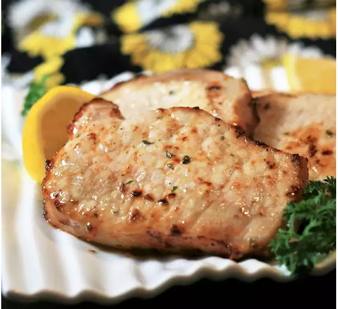

Pork Chops

Nutrition Facts
- Per Serving: 260 calories; protein 40.8g; carbohydrates 0.6g; fat 9.1g; cholesterol 106.6mg; sodium 148.2mg.
Ingredients
- aluminum foil
- 2 teaspoons dry ranch salad dressing mix
- cooking spray
- 4 boneless, center-cut pork chops, 1-inch thick
Directions
- step 1: Place pork chops on a plate and lightly spray both sides with cooking spray. Sprinkle both sides with ranch seasoning mix and let sit at room temperature for 10 minutes.
- step 2: Spray the basket of an air fryer with cooking spray and preheat the air fryer to 390 degrees F (200 degrees C).
- step 3: Place chops in the preheated air fryer, working in batches if necessary, to ensure fryer is not overcrowded.
- step 4: Cook for 5 minutes. Flip chops and cook 5 minutes more. Let rest on a foil-covered plate for 5 minutes before serving.